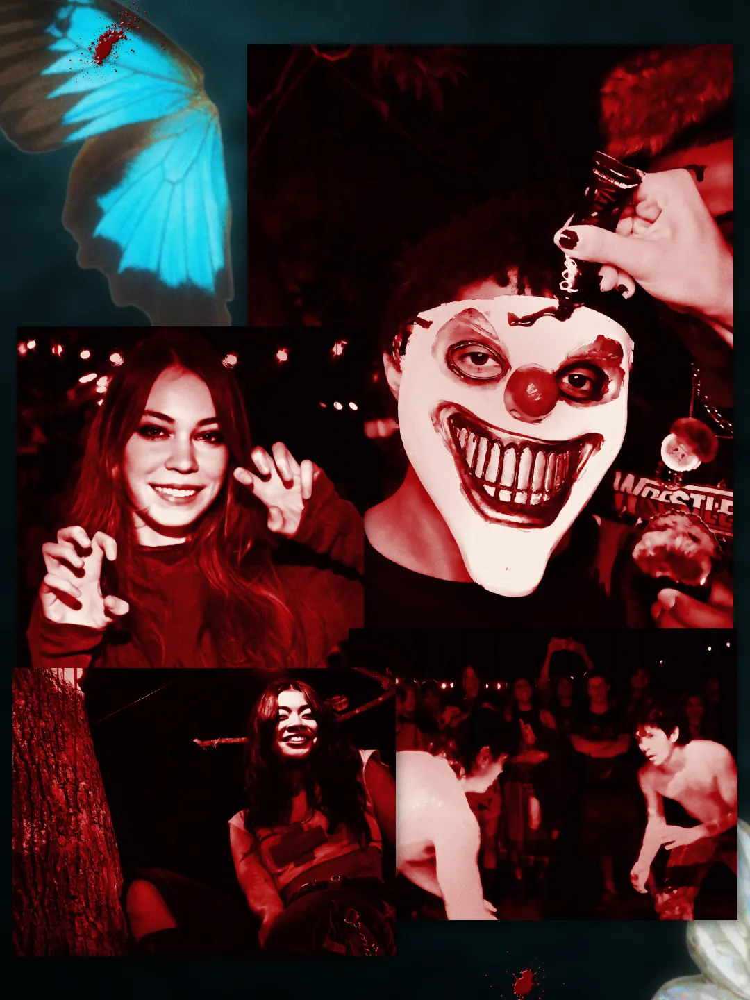
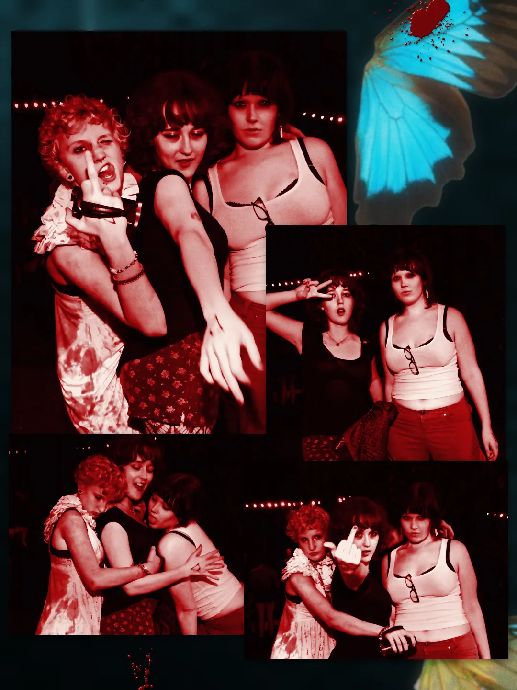
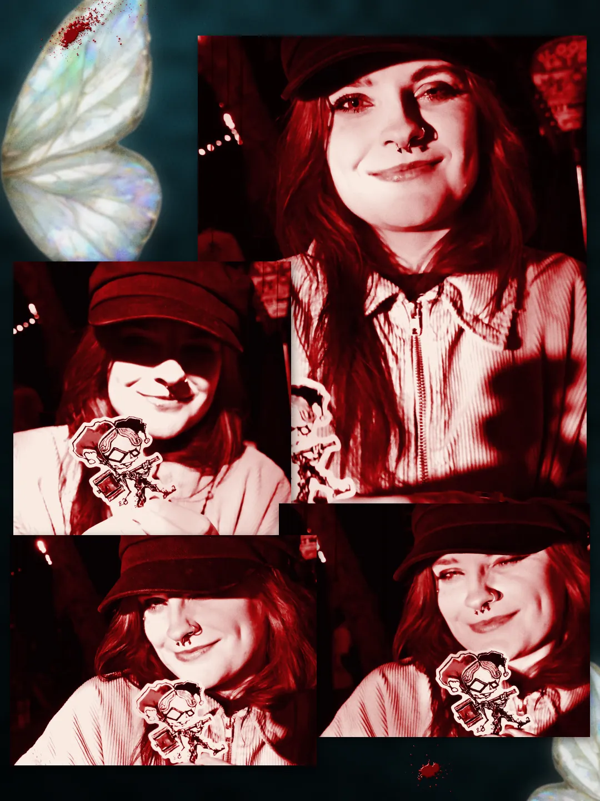
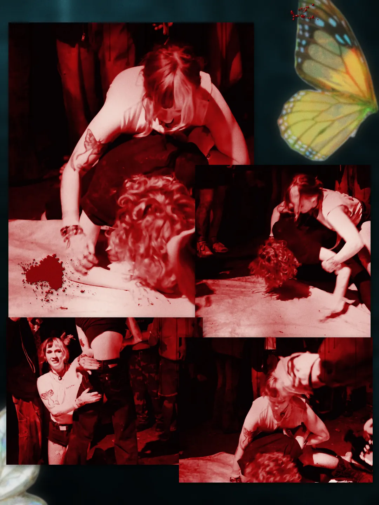
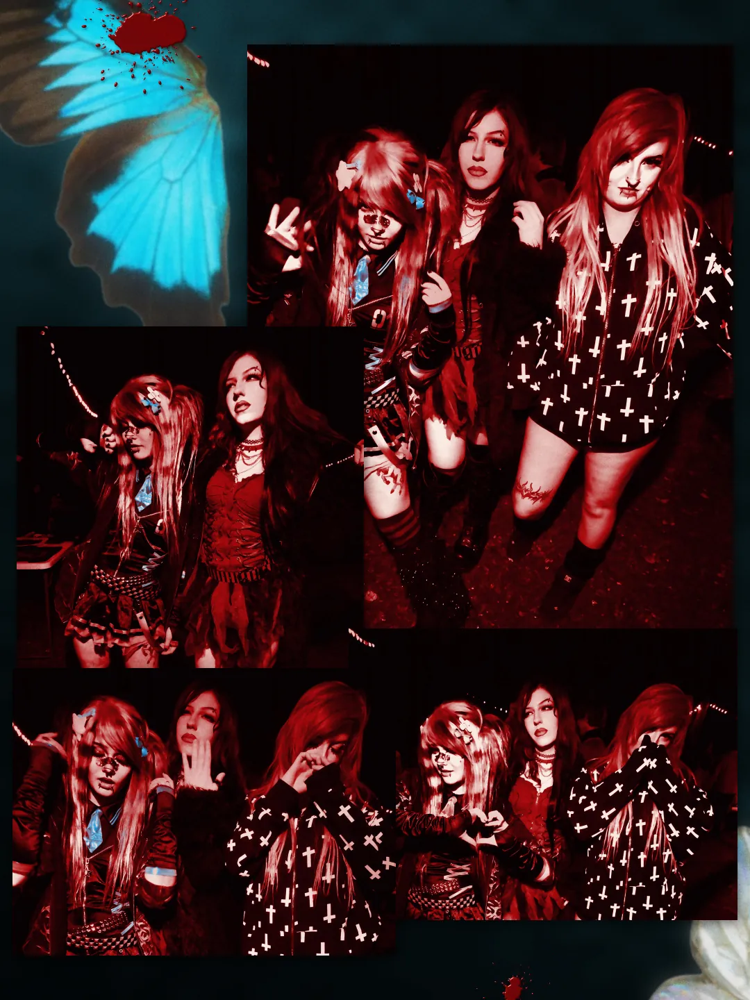
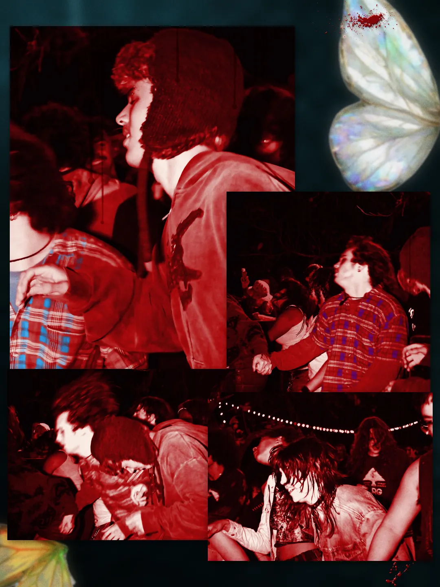
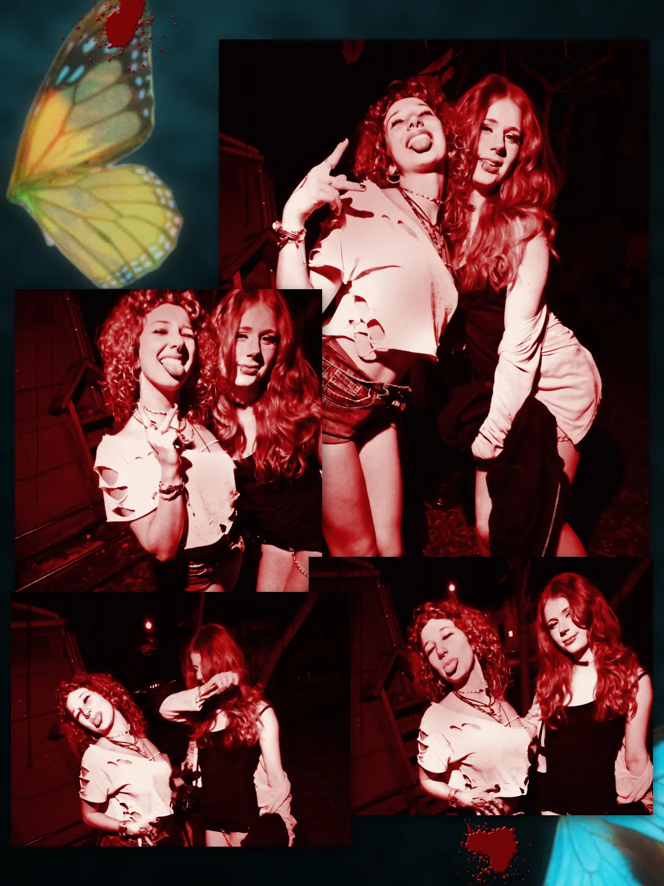
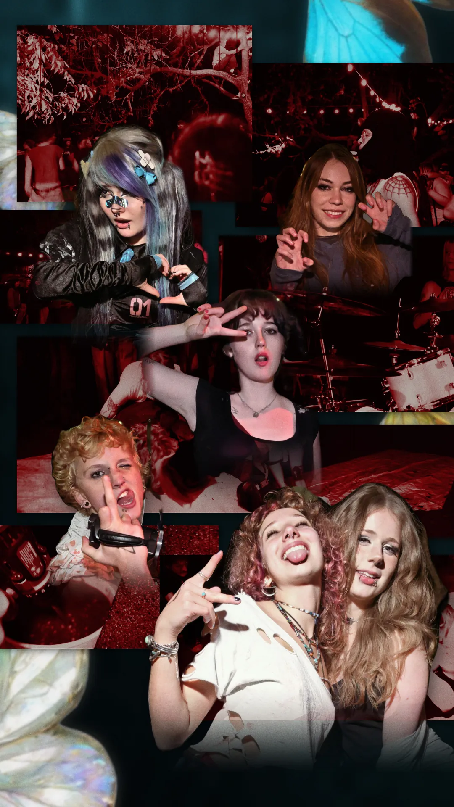
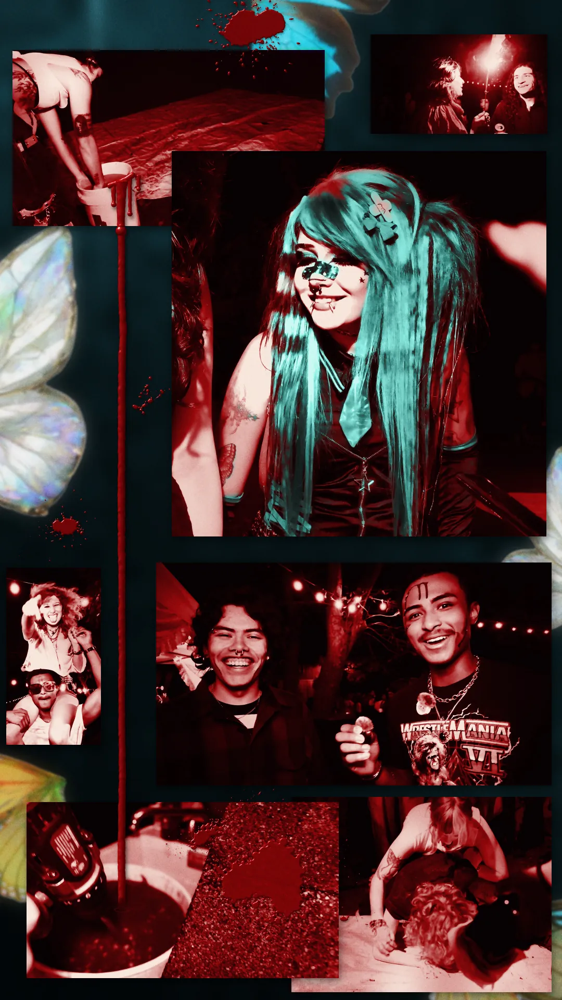

Private Park · Nov 13, 2026
BLOODBATH 4
Two carousels and two stories from the night. Tap any slide to open it full size.
Follow The Blood
7 slides, one strip · swipe it: the 6:51 PM bucket spills and runs through the night into the 12:12 AM one
The Bursts
7 slides, each one a burst · every slide plays with its song on the tape







The stories
2 stories

